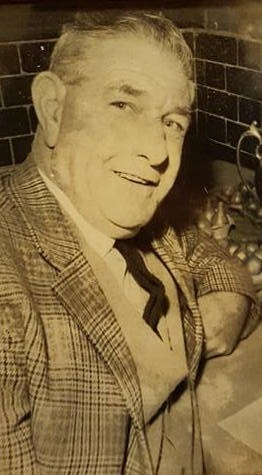
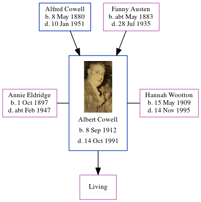

Albert Edward Cowell 1912 - 1991
[ Home ] | [ Calendar ] | [ Surnames Index ] | [ Errors ] | [ Family History ]A farm worker horseman and the child of Alfred Cowell (a transport driver) and Fanny Austen, Albert Cowell, the first cousin once-removed on the mother's side of Nigel Horne, was born in Minster, Thanet, Kent, England on 8 Sept 19121,2,3,4,5,6,7,8 and. He was married twice - to Annie Eldridge (c. Nov 1935 in Thanet, Kent, England) Hannah Wootton (in Oct/Nov/Dec 1950 in Thanet, following the death of Annie Edith Hannah c. Feb 1947)9. He has 1 surviving child with Hannah Wootton, Brenda E F.
During his life, he was living at his birthplace on 19 Jun 19218; at 9 High Street, Manston, Kent on 29 Sept 19391 - less than a mile from his grandfather John Cowell who was living at 7 Pouces Cottages, Manston, Kent; at 5 Spratling Street, Manston, Kent in 195310; and at 27 Bathurst Cl, Ramsgate, Kent in 196311 and in 197412.
He died on 14 Oct 1991 in Thanet3,4.
Parents
- Alfred John was born on 8 May 1880
- Fanny was born c. May 1883
Citations
- 1939 Register - Findmypast (was the head of the household)
- England & Wales births 1837-2006 - Findmypast
- England & Wales deaths 1837-2007 - Findmypast
- England & Wales, Death Index: 1984-2005 Online publication - Provo, UT, USA: The Generations Network, Inc., 2007.Original data - General Register Office. England and Wales Civil Registration Indexes. London, England: General Register Office. © Crown copyright. Published by permission of the Cont
- England & Wales, FreeBMD Birth Index, 1837-1915 Online publication - Provo, UT, USA: The Generations Network, Inc., 2006.Original data - General Register Office. England and Wales Civil Registration Indexes. London, England: General Register Office. © Crown copyright. Published by permission of the Cont
- Volume: 2A; Page: 1882; Line Number: 124; Record set: England & Wales births 1837-2006; Subcategory: Births & baptisms; Category: Birth, Marriage & Death (Parish Registers); Collections from: United Kingdom;
- Volume: 16; Page: 1722; Register number: 1091; Record set: England & Wales deaths 1837-2007; Subcategory: Deaths & burials; Category: Birth, Marriage & Death (Parish Registers); Collections from: United Kingdom;
- 1921 Census Of England & Wales - Findmypast (was age 8 and the son of the head of the household)
- England & Wales, Marriage Index: 1916-2005 Online publication - Provo, UT, USA: The Generations Network, Inc., 2009.Original data - General Register Office. England and Wales Civil Registration Indexes. London, England: General Register Office. © Crown copyright. Published by permission of the Cont
- 1953 Kelly's Thanet Directory
- 1963 Kelly's Thanet Directory
- 1974 Kelly's Thanet Directory
Media
Albert Cowell

1953 Kelly's Thanet Directory

1963 Kelly's Thanet Directory

1974 Kelly's Thanet Directory

England & Wales births 1837-2006 - BMD/B/1912/4/AZ/000293/124
England & Wales deaths 1837-2007 - BMD/D/1991/10/78352355
1939 Register Transcription - TNA-R39-1763-1763I-009-24
England & Wales marriages 1837-2008 - BMD/M/1935/4/AZ/000270/018
Family Tree
Map
Generated by ged2site. Last updated on Jul 3, 2024
Known Issues
Location for 19 Jun 1921 (Minster, Thanet, Kent, England) differs from mother's (Durlock Farm Cottages, Minster, Thanet, Kent, England)
19 Jun 1921: Not living with either parent in childhood when aged 8